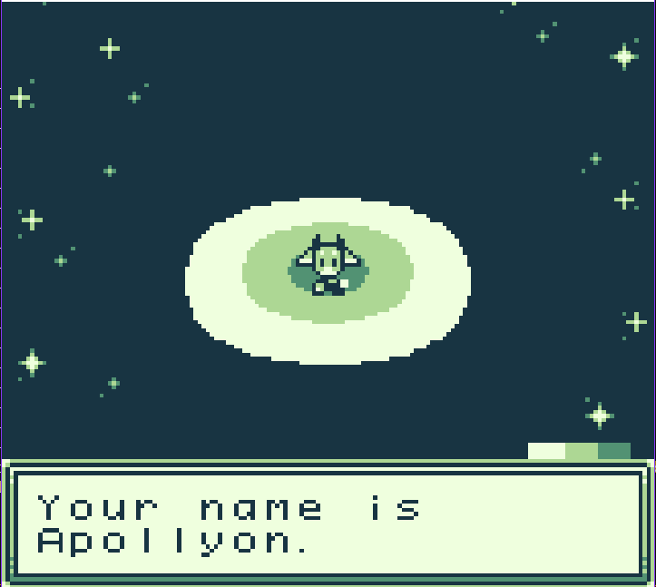

Fodder for the Elder Gods

Howdy! Fodder for the Elder Gods is a farming game more styled towards the classic Harvest Moon games with a couple of improvements that were added in games such as Stardew Valley. You start as an alien who is the prince from an alien planet, but, being the younger prince and having little to no chance at an actual throne, gets tired of his life and sees the news one day on TV. The news says that a new planet has been discovered that's great for farming, but the last people sent there to start a colony mysteriously disappeared and they need new people to move there and start farming. Your player character, seeing chickens and snazzy overalls on the TV, is instantly drawn in. He tells his family about his plan, and they are all very skeptical, but he decides to go anyway.
In Fodder for the Elder Gods, you arrive to a planet largely lush with animal and plant life, but holding a dark secret. Elder gods rule the land, and they're not so happy you've moved in. In order to save your new home, you have to convince the Gods you aren't so bad, or else you'll all just become fodder for the elder gods.

Playable demo coming very soon!
Gameplay
In this game, you'll meet a variety of townsfolk and you'll get to run a farm either with traditional crops or newly discovered alien crops and animals. There will be things to collect, objectives and quests to complete, and people to befriend. There will also be special events, either traditional holidays or new, more cryptic holidays to match the cryptic alien planet setting.
Apollyon of Blue Room

In Apollyon of Blue Room, you play as a small goat boy named Apollyon who finds himself unable to remember who he is, but has the faint memory of someone he once was and someone he once loved. Apollyon of Blue Room is a game made in GB Studio where you traverse vast puzzles while trying to piece together Apollyon's memories and figure out how and why he finds himself in a strange new world. The development for this game is on hold for right now as I wanted to shift more of my focus on Fodder for the Elder Gods while I had freetime.
Are you sure you want to continue?